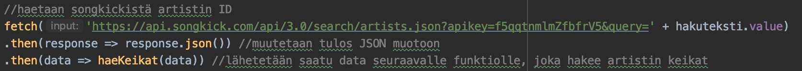
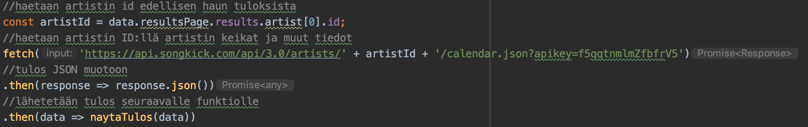
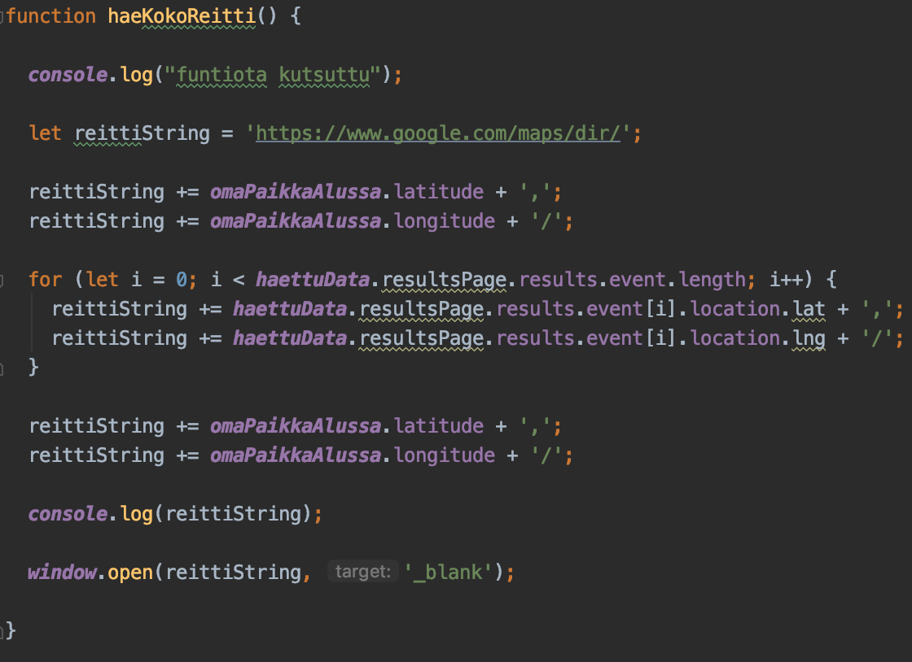

Songkick API - Getting started with Songkick API

Tässä haetaan Songkick API:sta artistin ID ja passataan se seuraavalle funktiolle...

...joka hakee artistin ID:llä kyseisen artistin keikat. Tämä data lähetetään taas seuraavalle
funktiolle, joka näyttää sen nettisivulla. Google Maps Directions API -
How to

Tässä esimerkissä rakennetaan linkki monesta eri osasta ja loopataan läpi taulukko,
josta saadaaan eri keikkapaikkojen koordinaatit. Lopuksi avataan haku uuteen ikkunaan.